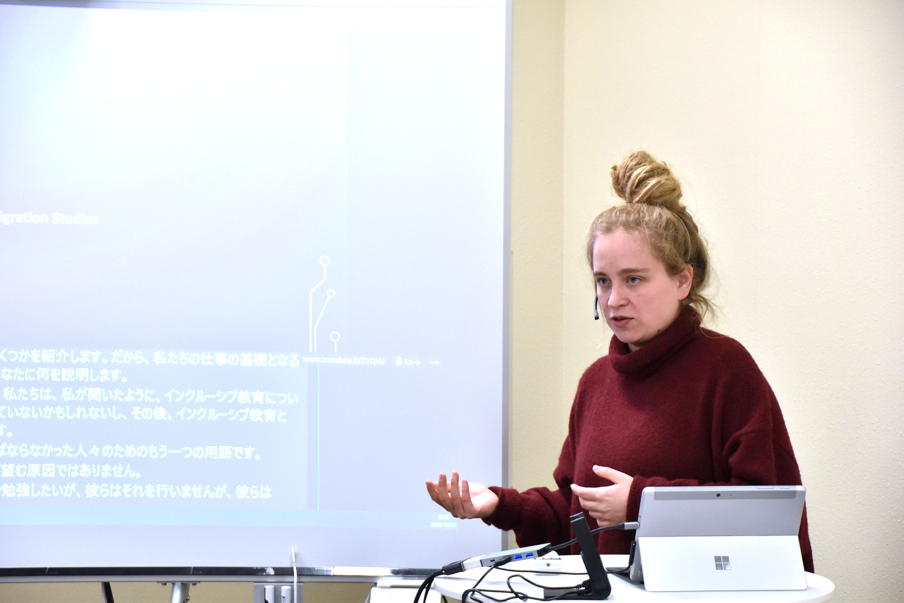
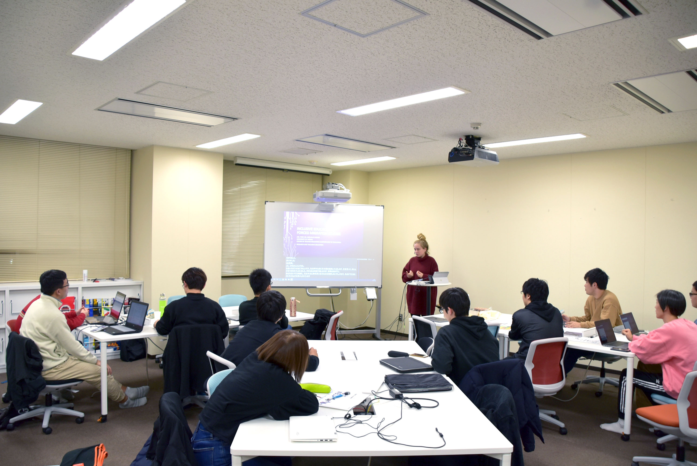
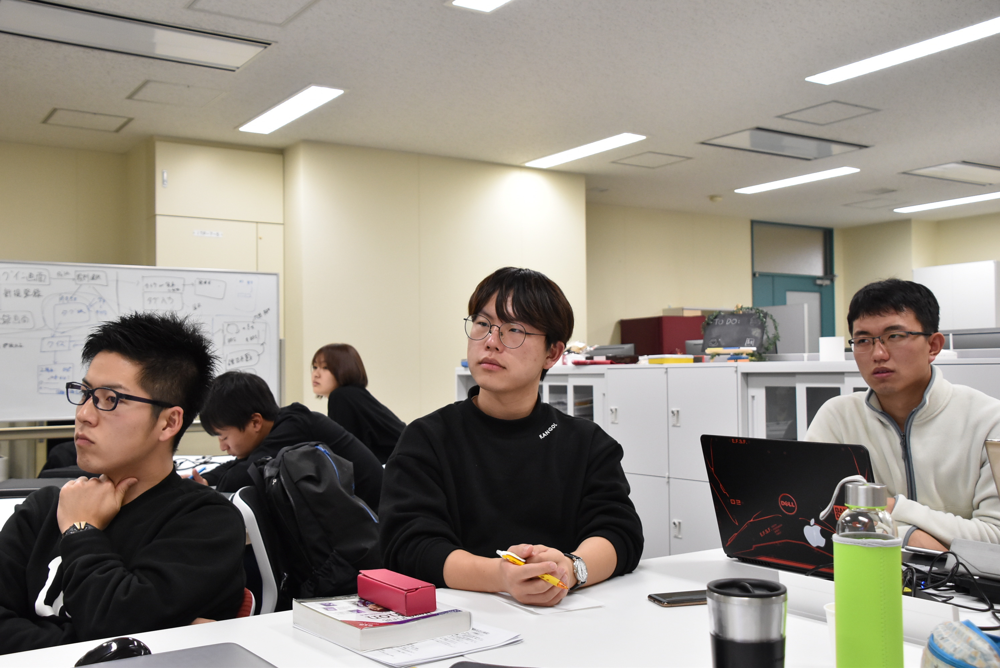

ウィーン大学のMichelle Proyer助教は、「オーストリアにおける強制移住の影響を受けた人々の社会参加：教師を対象に」について講演を行いました。英語による講演でしたが、学生は機械翻訳を介して講演を理解し、質問も積極的に行いました．

概要
毎年、オーストリアには様々な出自や学歴を持つ多くの難民が移住してきます。Proyer先生は、教師の資格を持った難民がオーストリアで教師として再就職するための修了証プログラムについて紹介されました。その中で、言語や文化に関連した問題、例えばトランスリンガル(複数の言語を同時に使い分けること)な教育アプローチや、単言語や単一文化の将来など、オーストリアが直面している多様な難民の課題について報告いただきました。

